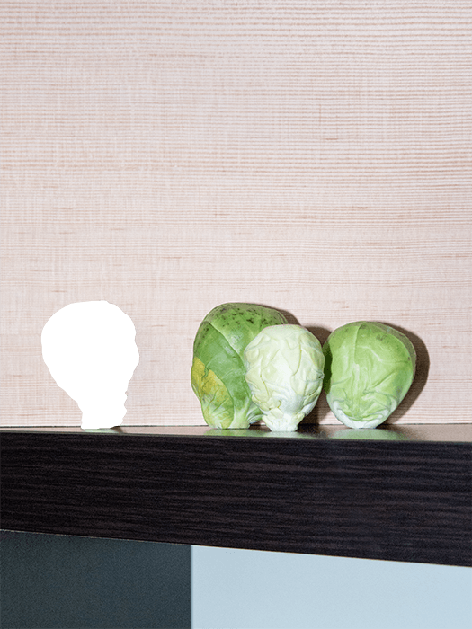
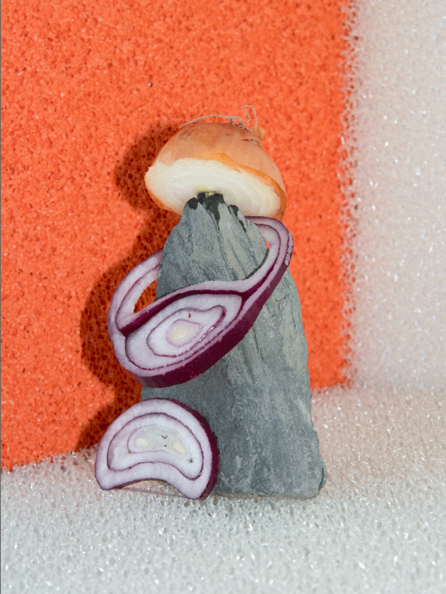
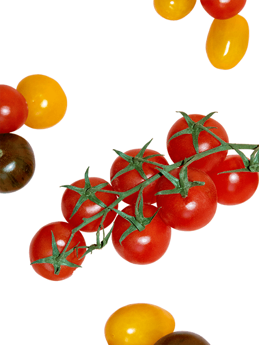

PHENO
Grow your own vegetables!
Spinach

Plant the seeds about 1 cm deep in small pots an keep them indoor. Separate the seedlings and plant into bigger pots when two true leaves have formed. Prior to transplanting work fertilizer into the soil. The plants should have a distance of around 45 cm between each other. For support, tie the plants to stakes. The growing spot should receive a lot of sun. Keep the soil moist but don’t overwater.
Chard

Plant the seeds about 1 cm deep in small pots an keep them indoor. Separate the seedlings and plant into bigger pots when two true leaves have formed. Prior to transplanting work fertilizer into the soil. The plants should have a distance of around 45 cm between each other. For support, tie the plants to stakes. The growing spot should receive a lot of sun. Keep the soil moist but don’t overwater.
Brussel Sprouts


Plant the seeds about 2 cm deep in small pots and keep them indoor. Plant out as soon as the seedling growth four leaves. The plants should have a distance of 40 cm between each other. The growing spot should receive a lot of sun. Keep the soil moist but don’t overwater. As a growth support tie the stem to a stake. Pinch off lateral shoots early on. Remove the main shoot around the middle of September. Fertilize from time to time.
Pepper

Plant the seeds about 1 cm deep in small pots an keep them indoor. Separate the seedlings and plant into bigger pots when two true leaves have formed. Prior to transplanting work fertilizer into the soil. The plants should have a distance of around 45 cm between each other. For support, tie the plants to stakes. The growing spot should receive a lot of sun. Keep the soil moist but don’t overwater.
Beetroot

Plant the seeds about 1 cm deep in small pots an keep them indoor. Separate the seedlings and plant into bigger pots when two true leaves have formed. Prior to transplanting work fertilizer into the soil. The plants should have a distance of around 45 cm between each other. For support, tie the plants to stakes. The growing spot should receive a lot of sun. Keep the soil moist but don’t overwater.
Peas


Plant the seeds about 1 cm deep in small pots an keep them indoor. Separate the seedlings and plant into bigger pots when two true leaves have formed. Prior to transplanting work fertilizer into the soil. The plants should have a distance of around 45 cm between each other. For support, tie the plants to stakes. The growing spot should receive a lot of sun. Keep the soil moist but don’t overwater.
Onion

Plant the seeds about 1 cm deep in small pots an keep them indoor. Separate the seedlings and plant into bigger pots when two true leaves have formed. Prior to transplanting work fertilizer into the soil. The plants should have a distance of around 45 cm between each other. For support, tie the plants to stakes. The growing spot should receive a lot of sun. Keep the soil moist but don’t overwater.
Carrot

Plant the seeds about 1 cm deep in small pots an keep them indoor. Separate the seedlings and plant into bigger pots when two true leaves have formed. Prior to transplanting work fertilizer into the soil. The plants should have a distance of around 45 cm between each other. For support, tie the plants to stakes. The growing spot should receive a lot of sun. Keep the soil moist but don’t overwater.
Tomato


Plant the seeds about 2 cm deep in small pots and keep them indoor. Plant out as soon as the seedling growth four leaves. The plants should have a distance of 40 cm between each other. The growing spot should receive a lot of sun. Keep the soil moist but don’t overwater. As a growth support tie the stem to a stake. Pinch off lateral shoots early on. Remove the main shoot around the middle of September. Fertilize from time to time.
Sweet Potato

Cut the sweet potato in half and place each in a glass of water with half of the potato below the water and half above. You can use toothpicks to hold the potato in place. When the potato is covered with sprouts that have around 4 leaves separate them by twisting it off of the sweet potato. Put the slips in a vase with water, after a few days they will grow roots. Plant the slips about 30 cm apart and allow 75 cm between rows. Sweet potatoes need loose soil and a lot of sun. When leaves and shoots are turning yellow you can harvest.